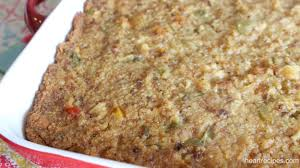

Grandma's Dressing

It was built on tradition
My grandmother always made this cornbread dressing for holiday dinners and for family
gatherings at other times of the year. Use your favorite cornbread mix to make a batch
of cornbread, and then crumble it for use in this family-favorite recipe. I hope you enjoy it as much as I have!
Ingredients
- 3 cups crumbled cornbread
- 2 tablespoons butter
- 1 small onion
- 1/2 cup chopped celery
- 2 large eggs
- 2 cups chicken stock
- 1 tablespoon dried sage
- salt and ground black pepper to taste
- Preheat oven to 350°F. Grease a 7x11 inch baking dish.
Place crumbled cornbread in a large bowl.
- Melt butter in a large skillet over medium heat. Add onion
and saute until soft for about 5 to 7 minutes.
- Add sauteed onion to the crumbled cornbread. Stir in chicken
stock, eggs, sage, salt, and pepper until well combined. Pour
dressing into the prepared baking dish.
- Bake in preheated oven until dressing just starts to turn golden
brown around the edges for about 30 minutes.
Home